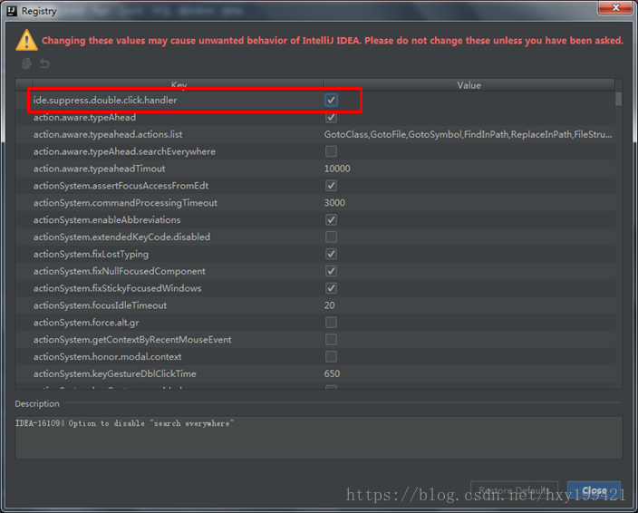
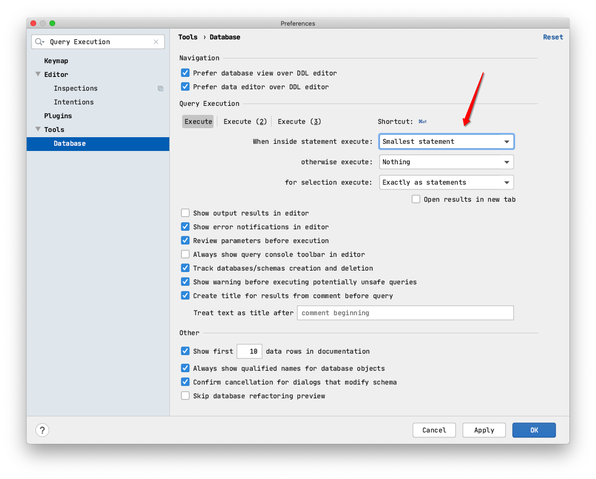

@(工作笔记)
IntelliJ_IDEA-record
[TOC]
调整文本编辑器


.zshrc未在Intellij中加载的tmux中找到
https://stackoverrun.com/cn/q/12802000

IDEA 显示allocated heap size在哪里啊
https://segmentfault.com/q/1010000007260515

webstorm使用stylus语法换行自动缩进

不知道其他代码是否会有影响
⌘+⇧+L outline 快速定位
激活2018版
https://blog.csdn.net/qq_35246620/article/details/79050895
Before launch使用

直接运行命令

运行shell脚本

webstorm 去掉编辑区的白线
https://jingyan.baidu.com/article/e75057f2c3a2efebc91a8921.html

#
https://blog.csdn.net/kimbing/article/details/52829736
webstorm什么快捷键可以选中多个相同的字符串？
https://segmentfault.com/q/1010000009886236

Webstorm 设置 自动换行
https://blog.csdn.net/web_sunjing/article/details/77062285


开启自动上传

取消idea双击shift时出现的全局搜索
来回切换中英文输入法的时候，idea会弹出来一个搜索框，像下图那样，很不方便，现在要把那个弹出框禁用掉

1、按ctrl+shift+a，弹出如下图的搜索框( mac 是 cmd+option+a)

2、输入registry，然后按回车

3、找到“ide.suppress.double.click.handler”，将后面的复选框勾上 
4、勾选上复选框后直接点击close，然后双击shift的时候就不会再出现全局搜索框了
该方法同样适用于WebStorm和GoLand
修改是否询问之后再执行

SQL 关键

SQL format
Common 普遍的, 常见的
- Align the first word of clause 从句的第一个词对齐
- place clause elements on 将子句元素放在
- place comma 逗号位置
- collapse short statement 塌陷(무너짐)短语句
- keep section elements under section header 将section元素保存在section标题下
- align section elements 对齐section元素
INSERT statement and VALUES clause 插入语句和值子句
- Place INTO on the new line 将INTO放在新行上
- Place INTO clause elements on 放置INTO子句元素
- Place VALUES clause elements (rows) on 放置VALUES子句元素(在行上)
- Place the opening parenthesis 放置左括号
- Place columns or values 放置列或值
- Place the closing parenthesis 放置右括号
- Wrap columns or values 包裹列或值
- Place comma 放置逗号
- Put spaces within parentheses 在括号内加上空格
- Collapse short multi-row values 折叠短多行值
类JavaLaunchHelper在两个地方实现
由于“此消息无害”（请参阅@ CrazyCoder的回答），一个简单而安全的解决方法是您可以通过IntelliJ IDEA设置在控制台中折叠此嗡嗡声消息：
【首选项】 - 【编辑】 - 【常规】 - 【控制台】 - 【包含控制台的折叠线】 当然，您可以使用【查找操作...】（cmd+shift+A在Mac上）并键入Fold console lines that contain以便更有效地导航。 加 Class JavaLaunchHelper is implemented in both

事实证明，在我的电脑上:( LGTM：b）
你可以展开消息再次检查它：

2019.1.3
https://zhile.io/2018/08/17/jetbrains-license-server-crack.html
解决mysql java.sql.SQLException: The server time zone value‘XXXXXX' is unrecognized or represents...
解决java.sql.SQLException: The server time zone value ‘XXXXXX’ is unrecognized or represents more than one time zone.###
1.报错截图
使用的数据库是MySQL，驱动是6.0.3，这是由于数据库和系统时区差异所造成的，在jdbc连接的url后面加上serverTimezone=GMT即可解决问题，如果需要使用gmt+8时区，需要写成GMT%2B8，否则会被解析为空。再一个解决办法就是使用低版本的MySQL jdbc驱动，5.1.28不会存在时区的问题。
idea中 在接口中如何直接跳转到该接口的是实现类中？
例如，我想跳转到UserInfoDao 这个接口的实现类中，操作如下：
 把鼠标放到这个接口UserInfoDao 上面，右键，选择 GO To ，然后选择 Implementations,就可以直接跳转到 接口实现类中，或者直接把鼠标放到 接口上面，然后输入快捷键：Ctrl+Alt+B ，也可以跳转到实现类中。
把鼠标放到这个接口UserInfoDao 上面，右键，选择 GO To ，然后选择 Implementations,就可以直接跳转到 接口实现类中，或者直接把鼠标放到 接口上面，然后输入快捷键：Ctrl+Alt+B ，也可以跳转到实现类中。
impl 中写的方法 , 快捷方式挪到接口中...

idea安装插件plugin(主要针对网络连接不上的情况)

敲重点！敲重点！敲重点！
选中你需要下载的版本，这边注意，可能与idea有版本兼容问题，建议下载最新版的idea
下载位置：idea解压文件夹下的plugins,我的目录: E:\soft\IntelliJ IDEA 2018.1.2\plugins
下载之后无需解压！不要解压！
制作替身快捷键

数据库默认选择
解决phpstrom 启动卡的问题 和index索引加载慢的问题
https://www.cnblogs.com/zyyweb/p/9616092.html
第一，解决启动卡的问题
只要修改两个Java虚拟机参数，就彻底解决了卡的问题了。
操作步骤如下：
找到C:\Program Files\JetBrains\PhpStorm 2018.2.2\bin 安装目录下
1.找到phpstorm64.exe.vmoptions文件和phpstorm.exe.vmoptions文件，使用记事本打开。
2.添加以下两行代码：
-Dawt.usesystemAAFontSettings=lcd
-Dawt.java2d.opengl=true
3.保存退出。
思路：
phpstorm是使用JAVA开发的。由于IDE提供源文件关键字渲染功能，我们对文件的任何编辑或移动鼠标，都会触发渲染操作。而phpstorm默认的JAVA环境并没有利用机器的硬件加速技术去实现实时渲染，因此当然会让系统卡死。而只要在JAVA环境中让系统默认使用硬件加速，就可以解决占用系统资源过大，让phpstorm卡的问题了。
现在又可以使用回phpstorm的熟悉环境了。
第二解决索引问题：
哪个项目文件夹加载慢 就在哪个文件夹右键------>找到Mark Directory As---->Excluded（排除）这样索引加载就好些了
最新版 maven 自动导入包的选项没了...

以前的
 现在
现在
DEA控制台换行

这个时候不需要重启，但是我们发现窗口还没有什么变化，只需要关掉console的窗口，重新开一个就可以看到换行的效果了
| 语法 | 说明 |
|---|---|
| ${变量名#匹配规则} | 从变量开头进行规则匹配 |
MAC版本的IDEA，自己下载的插件都在哪个目录？
https://www.zhihu.com/question/265365107
破解 Markdown Navigator
https://github.com/CrazyBunQnQ/multimarkdown
使用 external tools 打开文件
https://www.jetbrains.com/help/idea/configuring-third-party-tools.html
- Open IntelliJ IDEA -> Preferences
- Select Tools -> External Tools
- Enter a name and description for your tool.
- Leave all fields default except for Parameters.

intellij idea 如何安装本地插件
https://jingyan.baidu.com/article/3d69c5513e5953f0cf02d7b4.html
在 IDEA 中添加使用外部工具打开所选文件
https://www.dazhuanlan.com/2019/12/14/5df3c0b3f3faa/
Windows Server 2003 R2 标准版/企业版永久激活序列号密钥
https://www.nocang.com/windows-server-2003-r2/

IDEA控制台换行
版本控制修改颜色

Surround with Live Template

展开imports , 不要缩
Tuning PhpStorm performance by editing custom VM options
phpstorm使用OpenGL提高速度
PhpStorm在执行大量检查时在大文件中可能会非常慢。加快PhpStorm的一种快速简便的方法是使用OpenGL进行渲染。以前在5000行文件中，在更改为刻度（或红色/黄色框）之前，会在右上角长时间显示“眼睛”符号。OpenGL之后，它几乎立即执行此操作。
要启用OpenGL：
打开： path-to-phpstorm\bin\PhpStorm64.exe.vmoptions
然后将这两行添加到其他行下面：
-Dawt.useSystemAAFontSettings=lcd
-Dawt.java2d.opengl=true
插件路径
$HOME/Library/Application Support/JetBrains/IntelliJIdea2020.1/plugins
sql注入 表报错问题

SQL Resolution Scopes
sql执行块 是否询问, 大块, 小块

mybatis中的 @Param 是什么意思??
@Select("SELECT name,options FROM tb_spec WHERE template_id IN ( SELECT template_id FROM tb_category WHERE name = #{categoryName} )")
List<Map> findSpecListByCategoryName(@Param("categoryName") String categoryName);
spring中的 @RequestParam @PathVariable @RequestBody
@ControllerAdvice 又是个什么东西?
import org.springframework.web.bind.annotation.ControllerAdvice;
/**
* 统一异常处理类
*/
@ControllerAdvice
public class BaseExceptionHandler {
@ExceptionHandler(value = Exception.class)
@ResponseBody
public Result error(Exception e){
e.printStackTrace();
return new Result(false, StatusCode.ERROR, "执行出错");
}
}
选中变量 背景色 变粗 设置

https://stackoverflow.com/questions/26352197/how-to-change-usage-highlight-color-in-intellij-idea
External Tools

jetbrains 付费插件破解 https://www.fuocu.cn/archives/jetbrains-crack/
所有新建项目通用的设置
查看数据库 DDL
cmd+b , 相当于 show create table stu;
pom.xml 灰色
idea项目在maven projects中显示灰色的解决办法
https://blog.csdn.net/weixin_42884584/article/details/82156184

执行数据库语句 最小单位

Go to Type Declaration 追踪的是对象，触发之后跳到类文件中
Jetbrains系列产品重置试用方法
https://zhile.io/2020/11/19/jetbrains-eval-reset.html